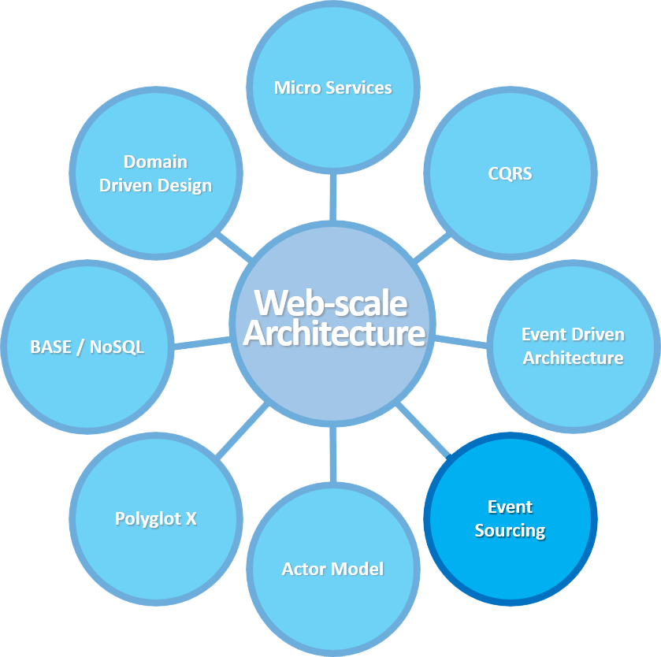

Event Sourcing

Doel
Concept 'Event Sourcing' bekend
Wat is Event Sourcing?


{
'id': 3,
'type': 'ArtikelToegevoegd',
'datum': '',
'data':
{
'artikel': 'Toetsenbord'
}
}

Wat is het niet?
- Holy grail
- Top level architecture
Voordelen
- Immutable lijst van events
- Debugability
- Performance (read models/append only writes)
- Geen object -> relational db mappings
- Scalable (read models)
- Selective synchronisation
- Occassional synchronisation
Nadelen
- Complex
- Event log kan snel gigantisch worden
- Move moving parts
Problems / solution
Is a username unique?
Replay all events in memory/then query? NO
- Snapshots
- Read models
- Eventual consistency

Versioning
Events no longer relevant, fields changed, names changed
- Event up converters
- Runtime
- Write in EventStore
- Snapshots
IMG HERE
Concurrency
- Optimistic locking
- Pessimistic locking
- Event merging
IMG ABOUT EVENT MERGING HERE
New service connected?
Wat als een service crashed?
- Replaying van events
- ATOM feeds
- Niet via bus!
Single source of failure
Correct, gewoon dubbel uitvoeren
Wanneer EventSourcing?
- Rich object-oriented domain models
- Non-CRUD behaviour
- Good debugging capabilities is critical
- Need version control of data
- Need it for monitoring
- Domain is inherently event driven
- You are using CQRS
Producten
- NEventStore (by Greg Young)
- Akka